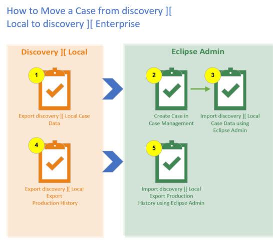

Migrate a Case to
Migrating a case from to is a multi-step process because you want to migrate over both the case data and the production history.
- Export the case from .
- Create a case in . This is the case into which you will be importing the case data.
- Import the case data into using the Eclipse Admin tool.
- Export the case production history from .
- Import the production history into using the Eclipse Admin tool.
The below diagram shows the export and import process for a given case from to .
